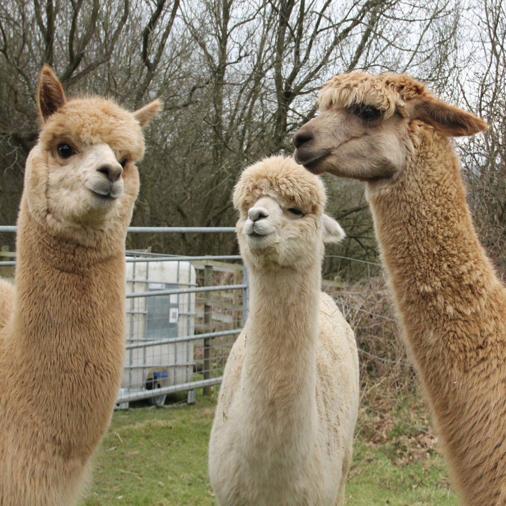

Yorkshire Alpacas
This website is for people wanting information on where they can find alpacas in yorkshire but what are alpacas?
Alpacas originate from the Altiplano in South America. Spanning the borders of Peru, Chile and Bolivia, this area of the Andes averages nearly 4000 metres above sea level. Alpacas are one of the camelid species, closely related to the llama. There are four species of South American camelid – Llamas (Lama glama) and alpacas (Vicugna pacos) are domesticated and vicuna (Vicugna vicugna) and guanaco (Lama guanicoe) remain wild and are protected species. All four are found mainly in Peru in the Andes, with smaller numbers in Chile and Bolivia. It is believed that the alpaca and the llama were domesticated from the wild species vicuna and guanaco over 6000 years ago.
The alpaca was developed primarily as a fleece producing animal with meat as a secondary product. A lot of alpacas are kept in the United Kingdom for fleece, but are also kept to guard other animals like sheep. Some farms keep alpacas and take them out on treks with the public, which as been proven good for mental health.

click on the alpaca above for more information!